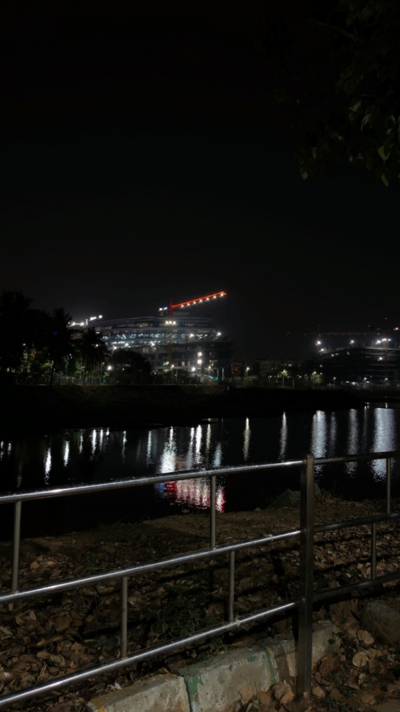
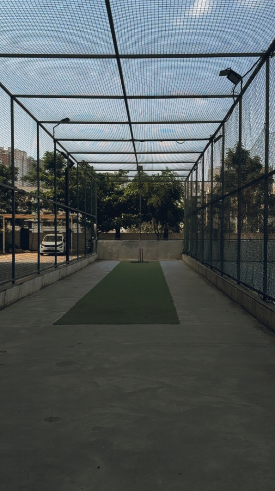

Shot on iPhone 17 Pro · All rights reserved
"The quiet between sips is where the best ideas live."

"Cities don't sleep — they just lower their voice."
"Framed by rust, painted by the last light."

"Every cage has a center. Every center has a purpose."
"Some roads don't need a destination."